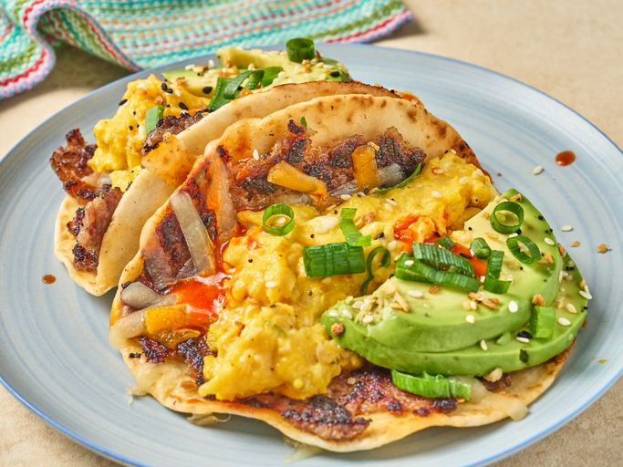

Breakfast Smashed Tacos
Smashed tacos: the breakfast version. Breakfast sausage spread on a tortilla, is griddled, topped with cheese, and filled with scrambled eggs, avocado, and hot sauce. How are these all so good?
Ingredients:
- 1 pound breakfast sausage
- 8 (4 to 6 inch) flour tortillas
- 1 tablespoon butter
- 5 large eggs, beaten with 1 tablespoon water
- 1 cup shredded Cheddar cheese
- 1 avocado, sliced
- 3 green onions, sliced
- hot sauce to taste
- everything bagel seasoning
Instructions:
- Spread a layer of sausage evenly over tortillas reaching the edges of each tortilla and set aside.
- Melt butter in a nonstick skillet over medium heat. Add eggs, season with salt and pepper, and cook, stirring often until just set. Keep warm.
- Heat a griddle or large skillet over medium-high heat. Working in batches if necessary, place tortillas on the griddle meat side down. Cook, undisturbed until browned and cooked through, about 4 minutes. Flip and cook 30 seconds to 1 minute longer. Fold tacos in half and top each evenly with scrambled eggs, cheese, avocado, and green onions. Drizzle with hot sauce and sprinkle with everything bagel seasoning.